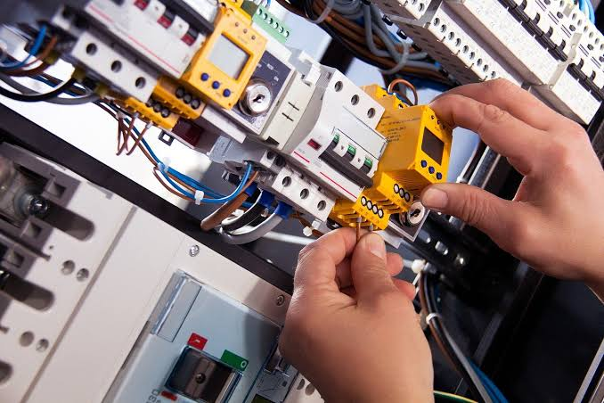
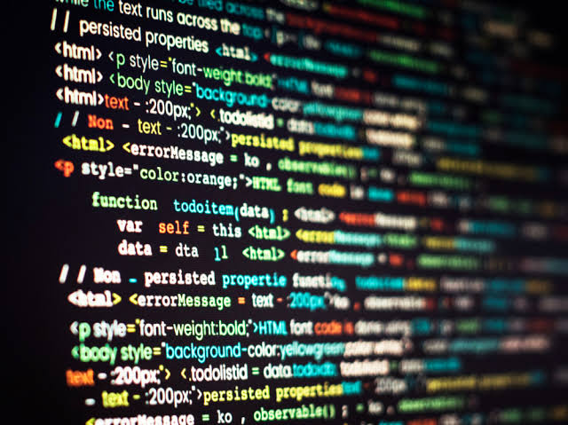
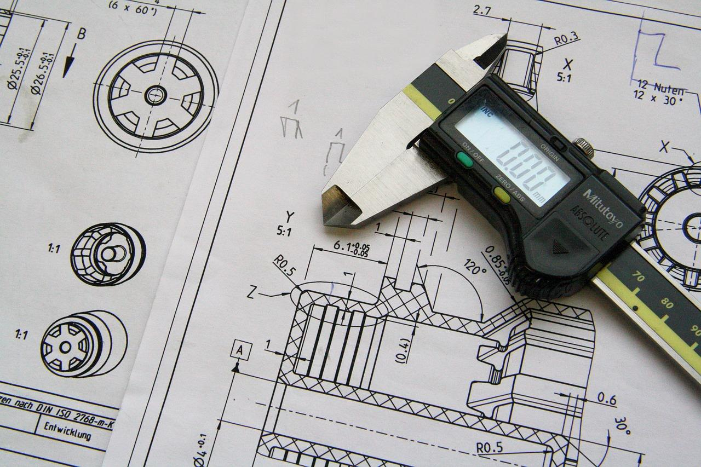
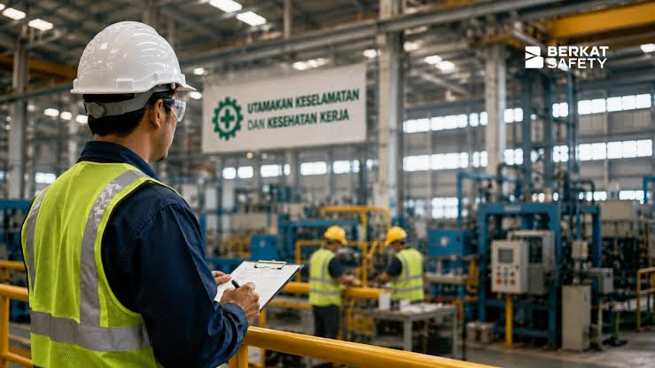
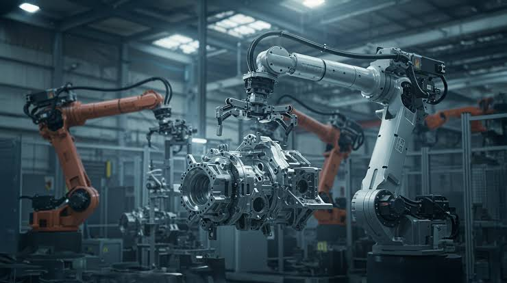

namaku Miko Saputra, developer yang menulis kode, artist yang menggambar rasa, dan mekanik yang menghidupkan mesin.
Aku suka melihat bagaimana mesin, orang, dan data bekerja bersama. Di sini aku mencatat langkah belajarku membuat setiap proses lebih rapi, aman, dan efisien.
Terus BelajarTerus BertumbuhTelitiSistematisTerus BelajarTerus BertumbuhTelitiSistematis
00 / perkenalan
Pagi hari aku menulis kode, sore hari aku menarik garis, dan malam hari aku membujuk mesin supaya mau bernyanyi. Tiga topi, satu kepala yang tidak bisa diam.
{ }
Developer
Aku merangkai baris demi baris sampai layar ikut bernapas. Bagiku bug bukan musuh, tapi teka-teki yang menunggu diajak bicara.
WebGameLogika
✎
Artist
Pensil dan piksel sama-sama bahasaku. Aku menggambar hal yang belum sempat ada, lalu membuatnya terasa seperti sudah lama hidup.
SketsaVisualRasa
⚙
Mekanik
Mesin bicara lewat suara dan getaran. Aku belajar mendengarnya, membongkarnya, lalu merakitnya kembali sampai kembali bernyanyi.
MesinRakitNyata
“Kode untuk logika. Seni untuk rasa. Mesin untuk nyata.”
01 / tentang aku
Teknik industri mengajariku melihat gambaran besar: bagaimana manusia, mesin, material, dan metode saling terhubung dalam satu alur kerja.
Aku tertarik pada pertanyaan sederhana: apa yang bisa dibuat lebih cepat, lebih aman, dan lebih baik tanpa mengorbankan kualitas? Dari gambar teknik sampai hitungan peluang, semuanya jadi latihan berpikir yang rapi.
Portofolio ini adalah catatan prosesku, bukan hanya hasil akhir. Setiap tugas kuanggap kesempatan untuk memahami, mencoba, memeriksa, lalu memperbaiki.
Profil singkat
Program studi Teknik Industri Institusi Univ PGRI Fokus: proses produksi, kualitas, gambar teknik, dan pemecahan masalah.
02 / kemampuan
Tingkat awal yang jujur. Bar akan terus bertambah seiring latihan.
Gambar teknikDasar
AutoCAD 2DPemula
Excel & olah dataDasar
Flowchart & logikaDasar
Analisis kuantitatifDasar
Kerja timDasar
03 / proyek
Latihan akademik yang membentuk cara berpikirku.
01
AutoCAD 2D
Menyajikan bentuk dan ukuran benda dengan perintah LINE, OFFSET, TRIM, MOVE, dan COPY.
CADKetelitian
02
Flowchart
Menyusun input, proses, keputusan, dan output sebelum menjadi program.
LogikaAlur
03
Peluang & Kualitas
Menghitung peluang produk cacat dan nilai harapan untuk membaca kondisi mutu.
ProbabilitasQC
04
Sentra Genteng
Memetakan bahan baku, tahapan produksi, tenaga kerja, hingga distribusi.
Studi kasusProses
05
Kimia Material
Mengaitkan ikatan kimia dengan kekuatan, titik leleh, dan daya hantar listrik.
MaterialSifat bahan
06
Fisika Teknik
Menyelesaikan soal dengan pola diketahui, ditanya, jawab, dan satuan yang tepat.
FisikaSatuan
materi belajar
Ringkas dan tidak bikin malas baca. Tiap materi punya inti, tiga poin penting, dan satu fakta menarik.
01
Dasar
Pengenalan lingkungan kerja industri
Pabrik bukan sekadar mesin. Ini ekosistem tempat manusia, mesin, material, metode, dan lingkungan bekerja dalam satu alur.
Area utama: gudang bahan baku, lini produksi, inspeksi kualitas, gudang barang jadi, dan pengiriman.
Alur kerja: bahan masuk, diproses, diperiksa, dikemas, lalu dikirim.
Aturan dasar: APD wajib, jalur pejalan kaki dipisah dari forklift, dan area kerja selalu rapi.
Tahukah kamu?
Budaya 5S dari Jepang (Seiri, Seiton, Seiso, Seiketsu, Shitsuke) menjaga tempat kerja tertib, sehingga alat mudah ditemukan dan risiko celaka berkurang.
02

Listrik
Dunia kelistrikan
Listrik adalah urat nadi pabrik: menggerakkan motor, lampu, sensor, dan sistem kendali.
Besaran dasar: tegangan (Volt), arus (Ampere), hambatan (Ohm), daya (Watt). Hukum Ohm: V = I × R.
Komponen umum: MCB, kontaktor, relay, motor listrik, dan panel kendali.
Instalasi industri: motor besar biasanya memakai listrik 3 fase, dengan kabel dan pengaman yang disesuaikan beban.
Tahukah kamu?
Daya dihitung P = V × I. Makin besar arus, makin panas kabelnya, jadi ukuran kabel dan pengaman tidak boleh asal pilih.
03

Logika
Logika pemrograman
Sebelum menulis kode, susun dulu cara berpikirnya. Program hanyalah urutan keputusan yang rapi.
Tiga pola dasar: urutan (sequence), percabangan (if-else), dan perulangan (loop).
Alur pikir: input, proses, output, lalu digambar sebagai flowchart atau ditulis sebagai pseudocode.
Kebiasaan baik: pecah masalah jadi langkah kecil, beri nama variabel yang jelas, dan uji dengan data contoh.
Tahukah kamu?
PLC di pabrik memakai logika yang sama: jika sensor mendeteksi produk, maka konveyor berhenti.
04

Desain
Gambar teknik dan AutoCAD
Gambar teknik adalah bahasa universal insinyur: satu gambar, satu arti, siapa pun yang membaca membuat benda yang sama.
Isi gambar: tampak depan, atas, dan samping, ukuran (dimensi), skala, jenis garis, dan satuan.
Kunci hasil rapi: atur satuan dan layer, pakai OSNAP agar presisi, dan cek ukuran sebelum dicetak.
Tahukah kamu?
Satu angka dimensi yang salah bisa membuat komponen tidak muat saat dirakit, jadi ketelitian lebih penting daripada kecepatan.
05

K3
Keselamatan kerja industri
Produktif itu penting, tapi pulang dalam keadaan selamat jauh lebih penting.
APD dasar: helm, kacamata, sarung tangan, masker, dan sepatu keselamatan.
Kenali bahaya: mesin bergerak, listrik, panas, bising, bahan kimia, dan beban berat.
Prinsip K3: identifikasi bahaya, nilai risikonya, lalu kendalikan. Saat perawatan, kunci sumber energi mesin dengan lockout-tagout.
Tahukah kamu?
Hierarki pengendalian bahaya mengutamakan menghilangkan bahaya lebih dulu. APD adalah lapisan terakhir, bukan yang pertama.
06

Teknologi
Robotik
Robot industri mengambil pekerjaan yang berat, berulang, dan berbahaya, supaya manusia fokus pada keputusan dan kreativitas.
Tiga bagian utama: sensor untuk merasakan, pengendali untuk berpikir, dan aktuator untuk bergerak.
Contoh pemakaian: lengan robot untuk las, cat, dan perakitan, serta AGV yang mengantar barang antar-area.
Cobot: robot kolaboratif yang aman bekerja berdampingan dengan manusia berkat sensor keselamatan.
Tahukah kamu?
Robot memakai logika pemrograman yang sama: baca sensor, ambil keputusan, lalu gerakkan motor.
04 / video
Video diputar satu kali. Musik mati saat video jalan, lalu menyala lagi begitu video selesai atau dijeda.
Video: industri.mp4 (letakkan di folder yang sama dengan file ini)
05 / cara kerja
Pahami masalah
Baca instruksi, tentukan tujuan, catat informasi yang ada.
Kumpulkan data
Ukuran, angka, referensi, dan kondisi proses yang relevan.
Analisis
Pilih konsep, rumus, atau metode yang paling cocok.
Susun solusi
Gambar, hitungan, flowchart, tabel, atau usulan perbaikan.
Periksa hasil
Cek ketepatan, satuan, dan kesesuaian dengan tujuan.
Dokumentasikan
Simpan hasil dan tulis apa yang kupelajari.
06 / lab mini
Alur produksi yang bergerak, lalu kalkulator peluang cacat yang bisa kamu mainkan.
Bahan baku
Produksi
Inspeksi
Gudang
Distribusi
Kalkulator peluang cacat
2NILAI HARAPAN CACAT
87%PELUANG ADA CACAT
0HASIL SIMULASI
07 / game
Kamu petugas inspeksi di ban berjalan. Ketuk produk cacat (merah) sebelum lolos, tapi jangan ketuk yang bagus. Makin tinggi skor, makin cepat sabuknya.
Terima kasih sudah mampir. Aku terbuka untuk masukan dan kolaborasi.